Tarayıcı oyunları
35 oyunEn çok oynananlar
Bu adla bir oyun bulunamadı.
Beceri oyunları 3
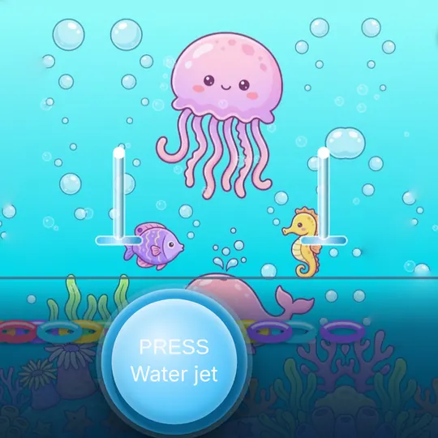
Sulu Halka
Su jetiyle halkaları yükseltin ve çubuklara geçirin. Yetişkinler için gerçekçi fizikli zor bir mod da var.
Oyna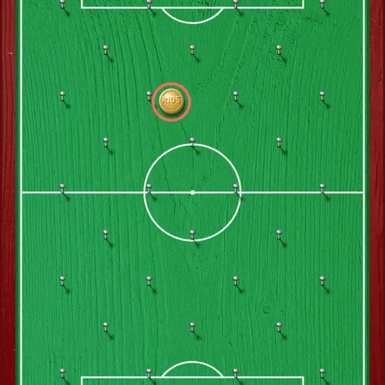
Çivi Futbolu
Parayı fırlatın, tahtaya çakılı çivilerin arasından geçirip rakip kaleye gol atın.
Oyna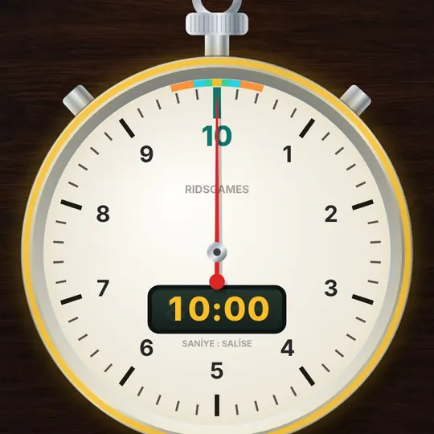
Cuk
Hedef süreyi seçin, kronometre gizlenince içinden sayın ve tam zamanında durdurun. Salisesine kadar ölçülür.
OynaStrateji oyunları 9
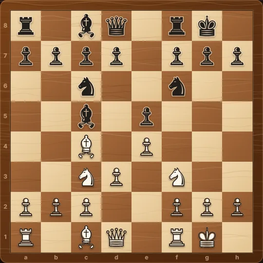
Satranç
FIDE kurallarıyla klasik satranç: rok, geçerken alma, terfi, pat ve beraberlik kuralları. Bilgisayara karşı ya da aynı cihazda iki kişi.
Oyna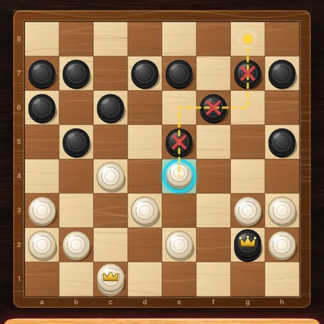
Türk Daması
Taşlarınızı ileri ve yana sürün, rakibin taşlarını atlayarak alın, son sıraya varıp dama olun.
Oyna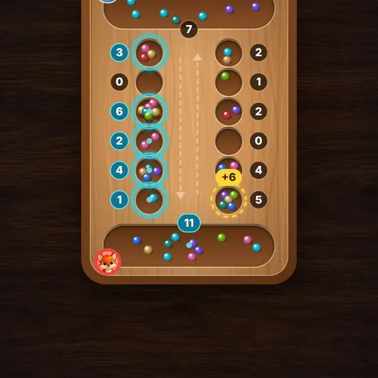
Mangala
Taşları kuyulara dağıtın, rakibin taşlarını yakalayın, hazinenizde en çok taşı siz toplayın.
Oyna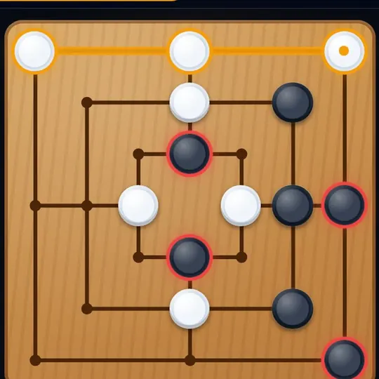
Dokuz Taş
Taşlarını diz, üçlü kur, rakibinin taşlarını al. Bilgisayara karşı ya da arkadaşınla oyna.
Oyna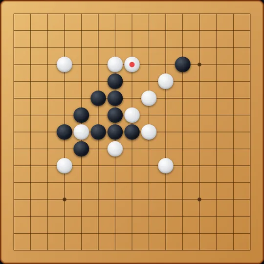
Gomoku
15×15 tahtada sırayla taş koy; beş taşı yan yana, alt alta ya da çapraz ilk dizen kazanır.
Oyna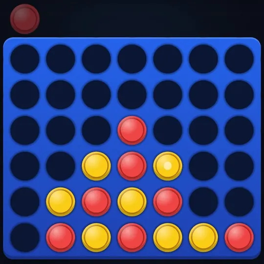
Dört Taş
Taşları sütunlara bırak, aynı renkten dört taşı yan yana, alt alta ya da çapraz ilk dizen kazanır.
Oyna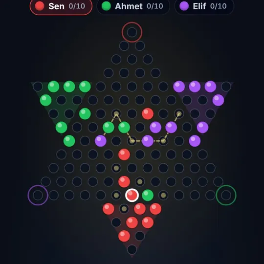
Çin Daması
Yıldız tahtada on taşını zincirleme atlayışlarla karşı köşeye ilk taşıyan kazanır. 2, 3, 4 ya da 6 kişi; bilgisayara karşı ya da aynı cihazda.
Oyna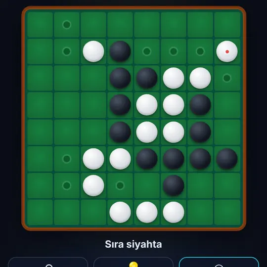
Taş Çevirme
Rakibin taşlarını kendi taşlarınla kuşat, rengini çevir. Sonunda tahtada çok taşı olan kazanır. Bilgisayara karşı ya da iki kişi.
Oyna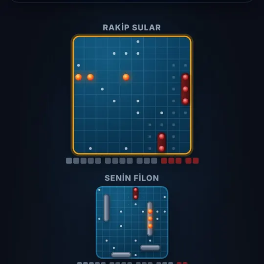
Amiral Battı
Gemilerini yerleştir, rakip sulara ateş et ve bilgisayarın filosunu ondan önce batır.
OynaZar oyunları 3
Kızma Birader
Zarı atın, piyonlarınızı evine götürün, yolunuzdaki rakibi başa gönderin. 2-4 kişilik klasik kutu oyunu.
Oyna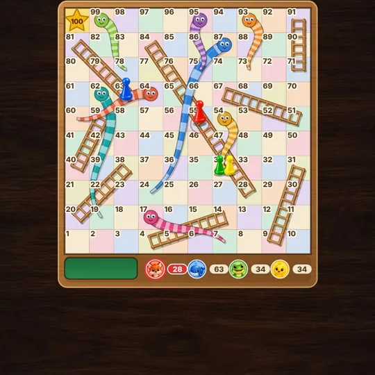
Yılan Merdiven
Zarı atın, merdivenlerle yukarı tırmanın, yılanlara yakalanmadan 100'e ilk siz ulaşın.
OynaTavla
Klasik tavla, Mahbusa ve Gülbahar bir arada. Zarları at, pullarını topla, maçı kazan. Bilgisayara karşı ya da iki kişi.
OynaOkey ve taş oyunları 3
Okey
Klasik Okey ve 101 Okey bir arada. Taşlarını diz, per aç, elini ilk sen bitir. Üç bilgisayar rakiple dört kişilik masa.
Oyna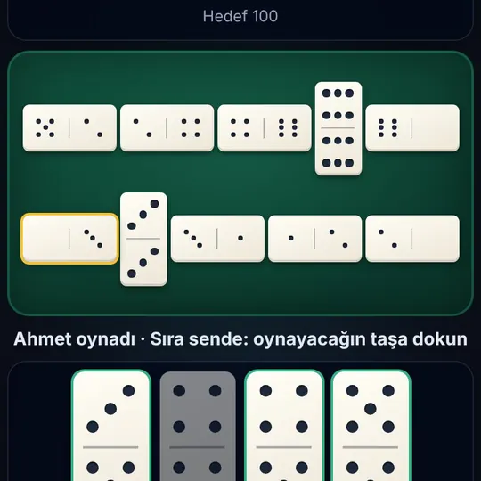
Domino
28 taşlık klasik domino. Taşları uçlara eşleştir, elini ilk bitiren puanı toplar. 1-3 bilgisayar rakibe karşı.
Oyna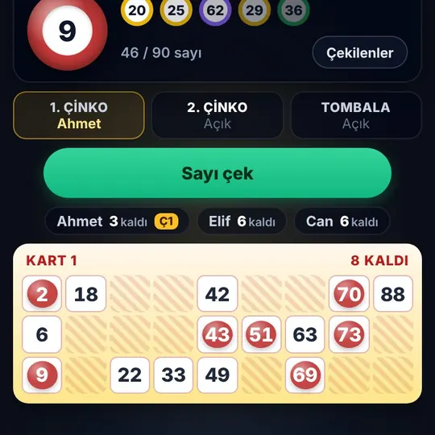
Tombala
1-90 sayılı klasik tombala. Kartındaki sayıları kapat, 1. çinko, 2. çinko ve tombala için bilgisayar rakiplerle yarış.
OynaZeka ve bulmaca 5
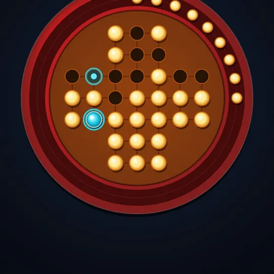
Solo Test
Piyonu komşusunun üzerinden boş deliğe atlatın, tablada tek piyon bırakmaya çalışın.
Oyna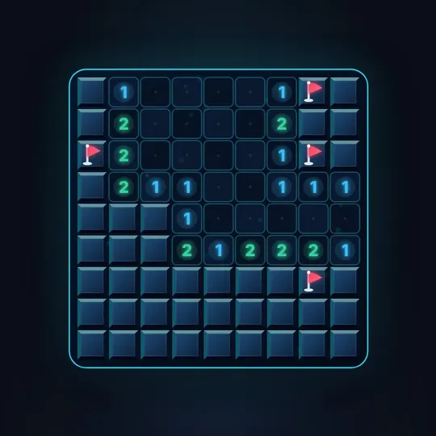
Mayın Tarlası
Mayınlara basmadan bütün kareleri açın. Sayılar çevrede kaç mayın olduğunu söyler, şüphelendiğiniz yere bayrak dikin.
Oyna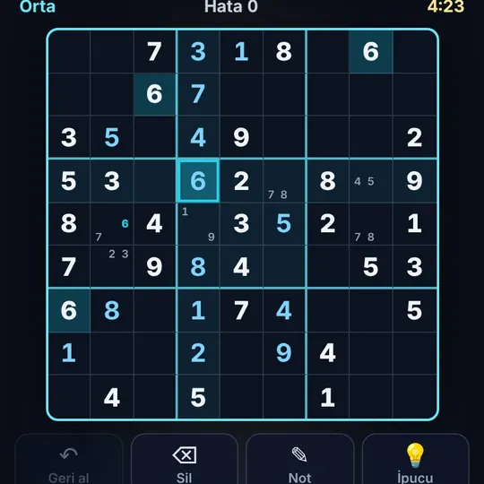
Sudoku
Her seferinde yeni, tek çözümlü sudoku. Kolay, orta ve zor seviye; not alma, ipucu, geri alma ve en iyi süre rekoru.
Oyna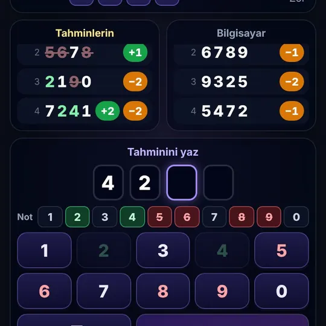
Sayı Bulmaca
Rakamları farklı gizli sayıyı + ve − ipuçlarıyla bul. Tek başına rekor kovala ya da bilgisayarla yarış.
Oyna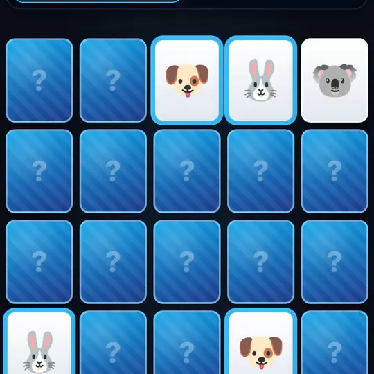
Hafıza
Kartları ikişer ikişer aç, eşlerini bul. Tek başına rekor kır, bilgisayara karşı ya da arkadaşınla oyna.
OynaKelime oyunları 4
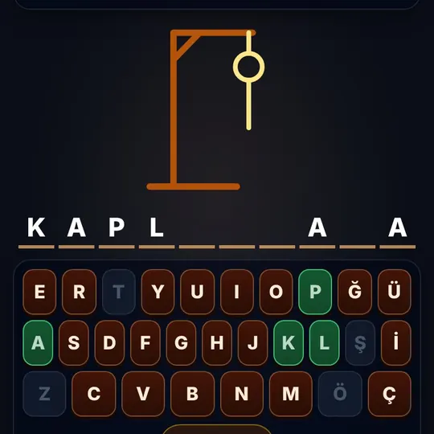
Adam Asmaca
Harf harf tahmin et, adam asılmadan kelimeyi bul. 9 kategori, 3 zorluk; arkadaşınla iki kişi de oynayabilirsin.
Oyna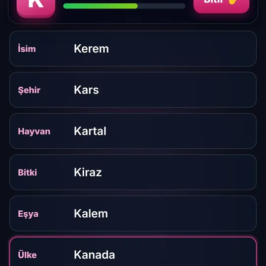
İsim Şehir
Harf belli olunca isim, şehir, hayvan ve diğer kategorilere yaz. Bilgisayara karşı, arkadaşlarınla ya da tek başına.
Oyna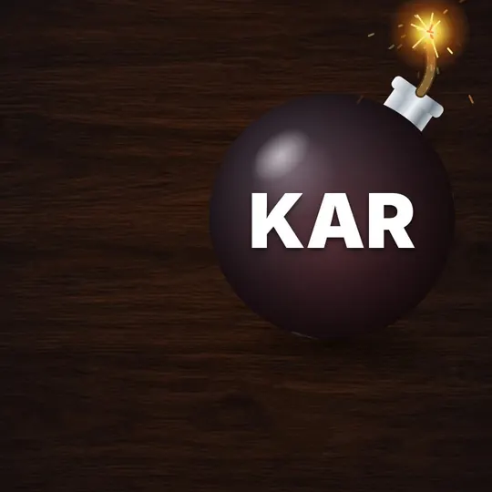
Dilimin Ucunda
Hecenin geçtiği bir kelime söyleyin, bombayı yanınızdakine paslayın. Patladığında elinde olan can kaybeder.
Oyna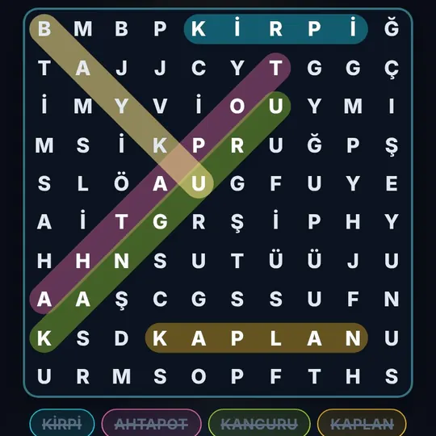
Kelime Avı
Harf tablosuna gizlenmiş kelimeleri bul. Hayvanlar, şehirler, meslekler gibi temalar, üç zorluk ve süre rekoru.
OynaKart oyunları 8
Pişti
Yerdeki kartın aynısını atıp destesini alın, valeyle her şeyi toplayın, tek kartın üstüne aynısını atıp pişti yapın.
Oyna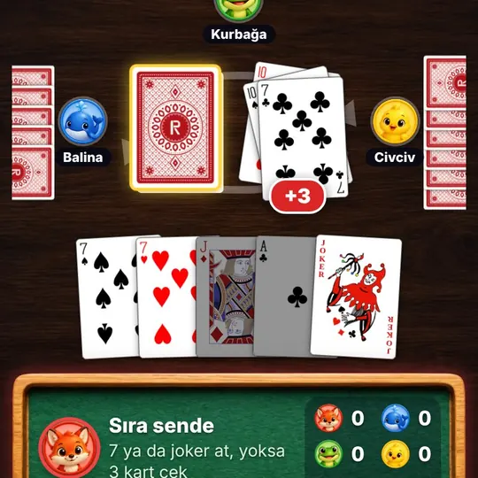
Pis Yedili
Rengi ya da sayıyı tutturun, 7'liyle kart çektirin, valeyle renk seçin, jokerle 5 kart yedirin, elinizi ilk siz bitirin.
OynaBatak
İhaleyi alın, kozu seçin, söylediğiniz kadar eli toplayın. Koz maça, ihaleli, eşli ve gömmeli oynayın.
OynaKing
Sırayla partiyi seçin: el almaz, kupa almaz, kız almaz, rıfkı... Cezalardan kaçın, kozda el toplayın.
Oyna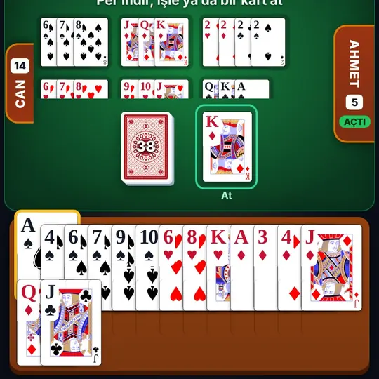
Konken (51)
İki deste ve iki jokerle klasik 51. Elini 51 puanla aç, kartlarını işle, konken yap. 1–3 bilgisayar rakibe karşı.
Oyna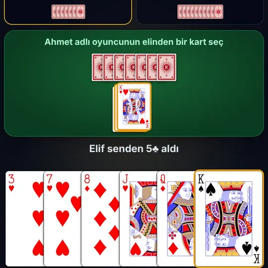
Papaz Kaçtı
Çiftlerini at, sıradaki oyuncudan kart çek. Eşi olmayan papaz son kimde kalırsa o kaybeder. 1–3 bilgisayar rakibe karşı.
Oyna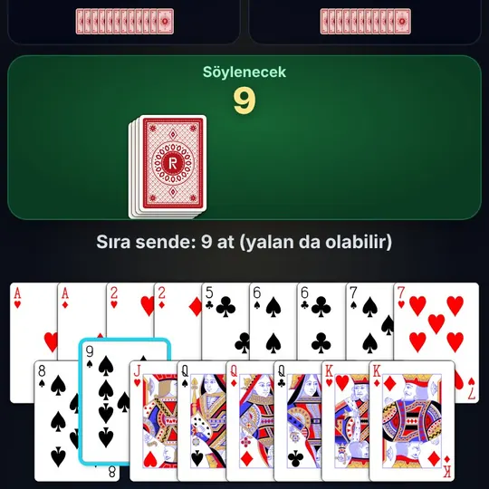
Blöf
Sıradaki değeri söyleyip kartlarını kapalı at, istersen blöf yap. Yalanı yakalayan masadaki desteyi rakibine yükler. 1–3 bilgisayar rakibe karşı.
Oyna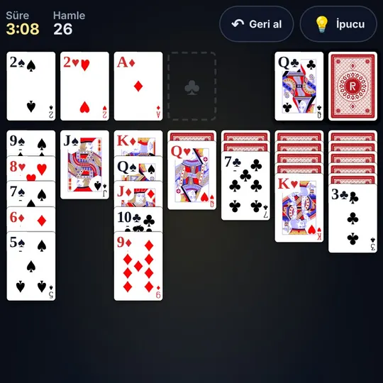
Sabır
Klasik tek kişilik kart oyunu Klondike. Kartları türlerine göre astan papaza diz. 1 ya da 3 kart çekiş, geri al ve ipucu.
OynaSırada yeni oyunlar var
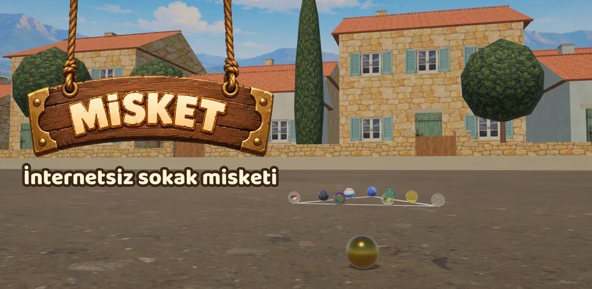
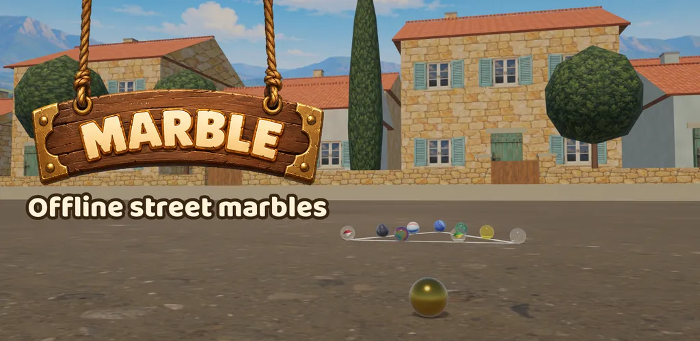
Öne çıkan oyun
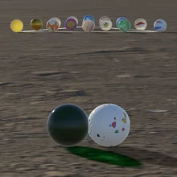
Misket KlasikGeleneksel sokak misket oyunu, cam misketlerle ve internetsiz. Sokağın klasikleri Mors, Tumba ve Kuyu'yu oynayın. Labirent'te telefonu eğip misketleri engellerin arasından geçirerek yuvalarına oturtun; 4 dünya, 105 bölüm. Golf'te betondan çimene, kumdan su arkına uzanan parkurlarda misketi en az atışla kuyuya sokun.
- 3sokak oyunu: Mors, Tumba, Kuyu
- 105labirent bölümü, 4 dünya
- 26misket
- 6mekân
Misket Klasik
Oyundan görüntüler
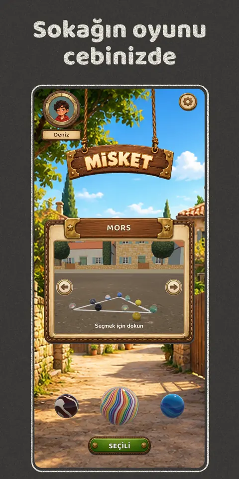
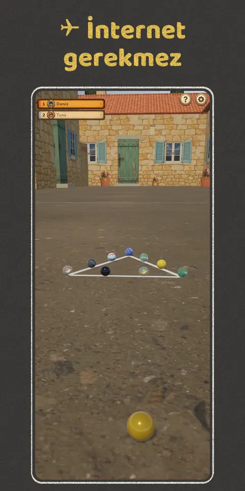
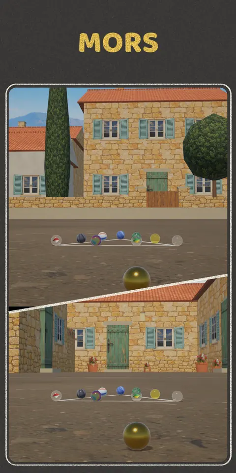
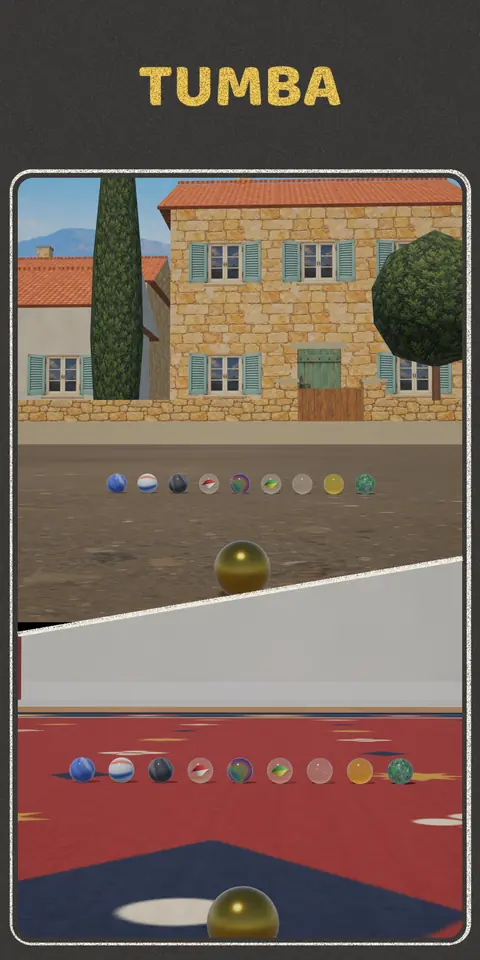
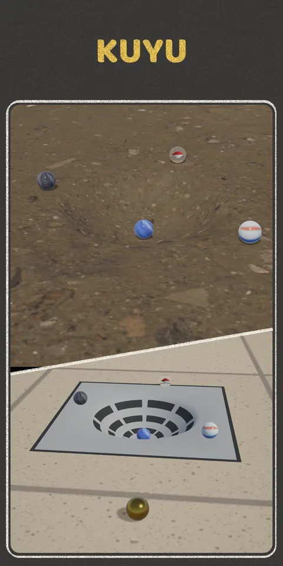
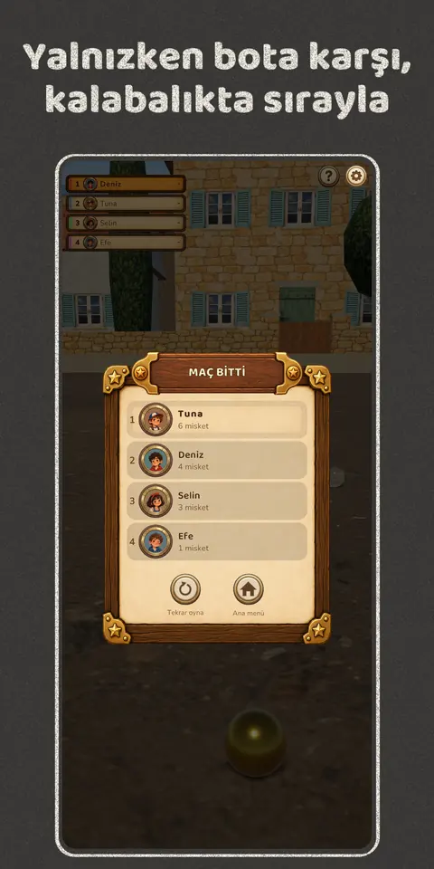
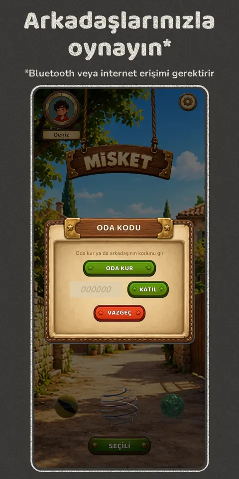
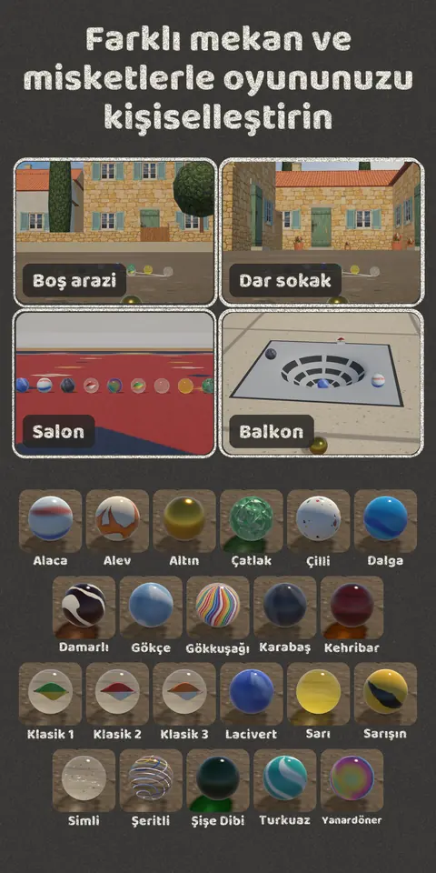
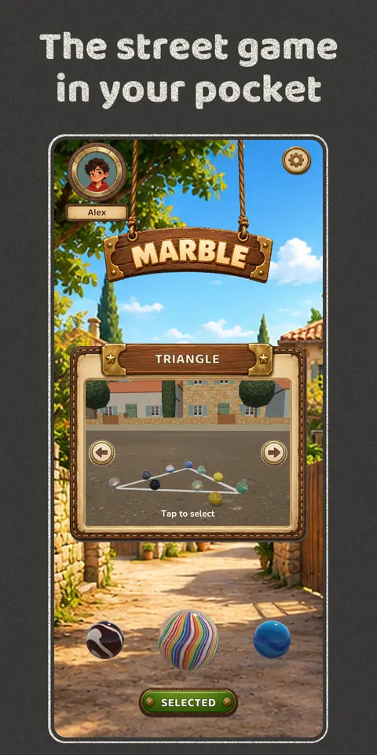
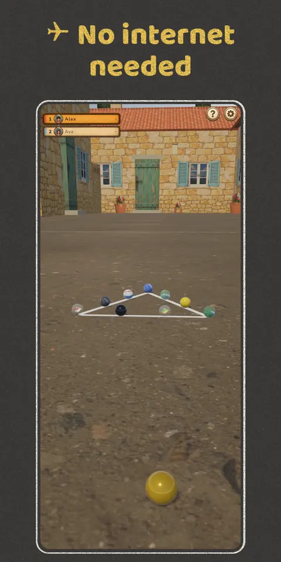
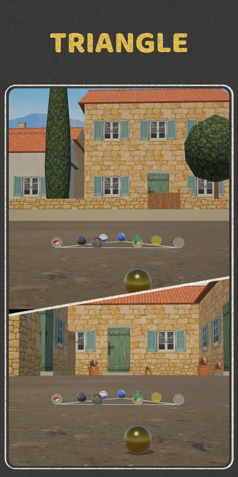
YouTube
Kanalımıza göz atın
Oyunlarımızın videoları YouTube'daki RIDS Games kanalında.
YouTube kanalına gitİletişim
Destek
Soru, öneri ve hata bildirimleriniz için bize e-posta ile ulaşabilirsiniz.
destek@ridsgames.com